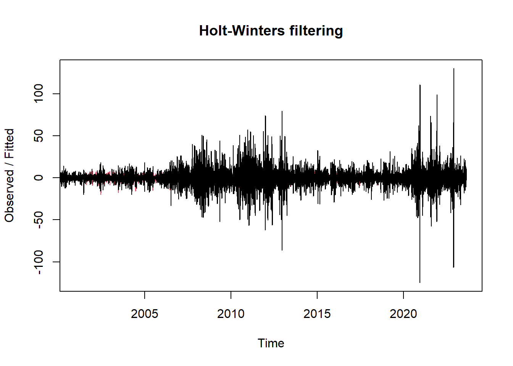

Chapter 6 Modelo de Holt-Winters
6.1 Modelo de suavizado exponencial simple (SES, por sus siglas en inglés)
Es un modelo de suavizado exponencial simple (SES, por sus siglas en inglés). En términos generales, el suavizado exponencial simple es un método de pronóstico que utiliza un único factor de suavizado (alpha) para dar más peso a las observaciones más recientes mientras suaviza las fluctuaciones aleatorias.
El modelo SES se define por la siguiente ecuación de recursividad:
\[ \hat{y}_{t+1} = \alpha \cdot y_t + (1 - \alpha) \cdot \hat{y}_t \]
Donde: - \(\hat{y}_{t+1}\) es el pronóstico para el siguiente periodo, - \(y_t\) es la observación actual en el periodo \(t\), - \(\hat{y}_t\) es el pronóstico actual en el periodo \(t\), y - \(\alpha\) es el factor de suavizado, que controla cuánto peso se le da a la observación actual versus el pronóstico anterior.
# Verificar la cantidad de períodos en la serie temporal
cantidad_periodos <- length(dif1_maiz)
print(cantidad_periodos)## [1] 6168library(forecast)
# Ajustar un modelo de suavizado exponencial simple
modelo_ses <- ses(dif1_maiz)
# Imprimir el modelo
print(modelo_ses)## Point Forecast Lo 80 Hi 80 Lo 95 Hi 95
## 2023.640 0.02585707 -14.98308 15.0348 -22.92834 22.98005
## 2023.644 0.02585707 -14.98308 15.0348 -22.92834 22.98005
## 2023.648 0.02585707 -14.98308 15.0348 -22.92834 22.98005
## 2023.651 0.02585707 -14.98308 15.0348 -22.92834 22.98005
## 2023.655 0.02585707 -14.98308 15.0348 -22.92834 22.98005
## 2023.659 0.02585707 -14.98308 15.0348 -22.92834 22.98005
## 2023.663 0.02585707 -14.98309 15.0348 -22.92834 22.98005
## 2023.667 0.02585707 -14.98309 15.0348 -22.92834 22.98005
## 2023.670 0.02585707 -14.98309 15.0348 -22.92834 22.98005
## 2023.674 0.02585707 -14.98309 15.0348 -22.92834 22.98005La salida anterior presenta los intervalos de confianza de los pronósticos, del valor del precio del maíz.
6.2 Método Holt-Winters para Predicciones
El Método Holt-Winters es un modelo de suavizado exponencial ampliamente utilizado para el pronóstico de series temporales que exhiben tendencia y estacionalidad. Este método es una extensión del suavizado exponencial simple (SES)presentado anteriormente, que también tiene en cuenta la componente de tendencia y la componente estacional de la serie temporal.
Una explicación del Método Holt-Winters:
- Componente de Nivel (Nivel):
- El Método Holt-Winters comienza con la estimación de un nivel inicial. Este nivel inicial se representa como \(L_0\).
- El nivel actual se calcula utilizando una combinación lineal de la observación actual y el nivel anterior. La fórmula para calcular el nivel actual es:
\[ L_t = \alpha \times Y_t + (1 - \alpha) \times (L_{t-1} + T_{t-1}) \]
donde:
- \(L_t\) es el nivel en el tiempo \(t\).
- \(Y_t\) es la observación en el tiempo \(t\).
- \(\alpha\) es la constante de suavizado para la componente de nivel. Controla cuánto peso se le da a la observación actual en la estimación del nivel.
- \(T_{t-1}\) es la estimación de la tendencia en el tiempo \(t-1\).
- Componente de Tendencia (Tendencia):
- La tendencia representa la dirección general de los datos a lo largo del tiempo.
- El Método Holt-Winters utiliza una estimación inicial de la tendencia, que se representa como \(T_0\).
- La tendencia actual se calcula utilizando una combinación lineal de la estimación de la tendencia anterior y la diferencia entre el nivel actual y el nivel anterior. La fórmula para calcular la tendencia actual es:
\[ T_t = \beta \times (L_t - L_{t-1}) + (1 - \beta) \times T_{t-1} \]
donde:
- \(T_t\) es la tendencia en el tiempo \(t\).
- \(\beta\) es la constante de suavizado para la componente de tendencia. Controla cuánto peso se le da a la estimación de la tendencia anterior en la estimación de la tendencia actual.
- Componente Estacional (Estacionalidad):
- La estacionalidad representa patrones periódicos en los datos, como estacionalidad mensual, trimestral o anual.
- El Método Holt-Winters puede manejar estacionalidad aditiva o multiplicativa, dependiendo de la naturaleza de la variación estacional en los datos.
- La estacionalidad actual se calcula utilizando una combinación lineal de la estimación de la estacionalidad anterior y la observación actual. La fórmula para calcular la estacionalidad actual es:
- Estacionalidad Aditiva: \[ S_t = \gamma \times (Y_t - L_t) + (1 - \gamma) \times S_{t-m} \]
- Estacionalidad Multiplicativa: \[ S_t = \gamma \times \frac{Y_t}{L_t} + (1 - \gamma) \times S_{t-m} \] donde:
- \(S_t\) es la estacionalidad en el tiempo \(t\).
- \(\gamma\) es la constante de suavizado para la componente de estacionalidad. Controla cuánto peso se le da a la observación actual en la estimación de la estacionalidad actual.
- \(m\) es el número de períodos en una temporada.
- Pronósticos:
- Una vez que se han estimado los componentes de nivel, tendencia y estacionalidad, se pueden hacer pronósticos para periodos futuros.
- Los pronósticos futuros se calculan extrapolando los componentes de nivel, tendencia y estacionalidad estimados.
- Los intervalos de predicción también se pueden calcular para tener en cuenta la incertidumbre en los pronósticos.
En resumen, el Método Holt-Winters es un método de suavizado exponencial que se utiliza para pronosticar series temporales con tendencia y estacionalidad. Utiliza tres componentes (nivel, tendencia y estacionalidad) que se actualizan en cada periodo para proporcionar pronósticos precisos y ajustados a los datos históricos observados.
library(xts)
# Crea una serie de tiempo con la función ts, se cambio a frecuencia 261
df_maiz_filtradots1 <- ts(df_maiz_filtrado$Último, start = c(2000, 1), frequency=261)
# Ajustar un modelo Holt-Winters
modelo_hw <- HoltWinters(dif1_maiz)
modelo_hw## Holt-Winters exponential smoothing with trend and additive seasonal component.
##
## Call:
## HoltWinters(x = dif1_maiz)
##
## Smoothing parameters:
## alpha: 0
## beta : 0
## gamma: 0.05748871
##
## Coefficients:
## [,1]
## a 1.196025e-02
## b 2.148086e-06
## s1 3.625904e-01
## s2 2.072227e+00
## s3 -4.343553e+00
## s4 3.067607e+00
## s5 -1.580285e+00
## s6 -1.563797e-01
## s7 2.230859e+00
## s8 -2.042569e+00
## s9 -3.854792e+00
## s10 3.061673e+00
## s11 -3.757941e-01
## s12 1.668813e+00
## s13 -5.649330e-01
## s14 -8.978262e-01
## s15 8.416663e-01
## s16 2.692629e+00
## s17 -2.403206e+00
## s18 -1.636254e+00
## s19 1.131904e+00
## s20 6.450480e-01
## s21 1.148122e+00
## s22 -9.999767e-01
## s23 9.845436e-01
## s24 -3.771913e-01
## s25 -1.382788e+00
## s26 -3.066932e+00
## s27 3.995394e+00
## s28 -1.725505e+00
## s29 -1.135322e+00
## s30 3.132806e+00
## s31 1.222622e+00
## s32 -1.000909e+00
## s33 -1.846917e+00
## s34 -5.601087e-01
## s35 2.242290e+00
## s36 -1.861890e+00
## s37 -1.686334e+00
## s38 -4.635978e-01
## s39 2.863075e+00
## s40 -2.018165e+00
## s41 2.769192e+00
## s42 -1.632217e+00
## s43 8.031953e-01
## s44 -5.702534e-01
## s45 -1.518754e+00
## s46 2.755791e+00
## s47 7.704967e-01
## s48 -1.043528e+00
## s49 1.309420e+00
## s50 -3.237817e-01
## s51 -1.755386e+00
## s52 -1.153485e-01
## s53 -2.202727e+00
## s54 -3.021789e-01
## s55 4.073804e+00
## s56 -7.718619e-01
## s57 9.628364e-01
## s58 -5.077203e+00
## s59 2.144449e-01
## s60 3.624485e+00
## s61 -8.154430e-01
## s62 -3.232614e+00
## s63 5.608390e+00
## s64 -1.457310e+00
## s65 9.945166e-01
## s66 7.167791e-01
## s67 -9.354526e-01
## s68 -9.550251e+00
## s69 1.069077e+01
## s70 -2.921245e+00
## s71 3.456165e+00
## s72 -2.926843e+00
## s73 -4.742816e+00
## s74 4.189790e+00
## s75 -3.302226e+00
## s76 2.670745e-01
## s77 3.807898e+00
## s78 -1.404144e+00
## s79 -1.679431e+00
## s80 2.348840e+00
## s81 -6.273076e+00
## s82 8.436481e+00
## s83 -1.683967e+00
## s84 5.489994e-01
## s85 -1.427416e+00
## s86 -2.206144e+00
## s87 8.517149e-01
## s88 -6.067195e-01
## s89 -2.087898e-01
## s90 1.774906e+00
## s91 -6.933224e-01
## s92 2.764304e+00
## s93 -3.004762e+00
## s94 -4.409837e-01
## s95 3.880974e+00
## s96 -1.544086e+00
## s97 -2.557914e+00
## s98 8.511816e-01
## s99 1.218457e+00
## s100 -5.798138e-01
## s101 1.183407e+00
## s102 1.717356e+00
## s103 -3.841055e-01
## s104 -2.677429e+00
## s105 4.091376e-01
## s106 2.456134e+00
## s107 -5.642216e-01
## s108 -4.145364e+00
## s109 2.652467e+00
## s110 -1.579576e+00
## s111 1.699693e+00
## s112 -2.109774e+00
## s113 1.675212e+00
## s114 1.838748e-01
## s115 -1.660914e+00
## s116 2.932574e+00
## s117 -1.519994e+00
## s118 -8.573809e-02
## s119 -1.619766e+00
## s120 -1.361896e+00
## s121 1.675731e+00
## s122 2.335011e+00
## s123 -9.947269e-02
## s124 -1.168669e+00
## s125 3.344764e+00
## s126 -3.355668e+00
## s127 2.000625e-01
## s128 -7.472207e-01
## s129 3.183665e+00
## s130 -2.386415e+00
## s131 1.989592e+00
## s132 3.148232e-02
## s133 -2.012891e+00
## s134 -1.355347e+00
## s135 7.595419e-01
## s136 2.179532e+00
## s137 -1.685793e+00
## s138 -1.221752e-01
## s139 9.915346e-01
## s140 -4.831528e-02
## s141 -2.117319e+00
## s142 3.807031e+00
## s143 -7.181535e-01
## s144 -4.452105e+00
## s145 1.707020e+00
## s146 2.049274e+00
## s147 -1.472027e+00
## s148 8.467559e-01
## s149 -2.492906e+00
## s150 2.275256e+00
## s151 8.469572e-01
## s152 4.121107e-01
## s153 6.937611e-02
## s154 -1.707574e+00
## s155 1.234292e+00
## s156 -1.785310e+00
## s157 1.212671e+00
## s158 -8.447222e-01
## s159 -1.542821e+00
## s160 -1.801360e+00
## s161 2.940915e+00
## s162 -4.152800e-01
## s163 2.277939e+00
## s164 -9.226003e-01
## s165 2.918961e-01
## s166 -1.891509e+00
## s167 6.645417e-01
## s168 6.281136e-01
## s169 5.023940e-01
## s170 -2.247560e+00
## s171 2.922156e+00
## s172 -2.182946e+00
## s173 1.128329e+00
## s174 -9.644369e-01
## s175 -9.961198e-01
## s176 1.540161e+00
## s177 -5.715641e-01
## s178 3.173644e+00
## s179 -1.673057e+00
## s180 -1.165130e+00
## s181 1.163226e+00
## s182 -3.209984e+00
## s183 3.784656e-01
## s184 2.401720e+00
## s185 -6.211565e-02
## s186 -1.824843e+00
## s187 9.277981e-01
## s188 8.188663e-01
## s189 1.794339e+00
## s190 -1.466285e+00
## s191 -1.606549e+00
## s192 2.822399e-01
## s193 1.196863e+00
## s194 -9.711246e-01
## s195 -2.453218e-01
## s196 -7.880559e-01
## s197 2.910257e+00
## s198 -1.603049e+00
## s199 -9.856864e-01
## s200 -1.441249e+00
## s201 3.537251e+00
## s202 7.460506e-01
## s203 2.516332e-01
## s204 -4.582502e-01
## s205 -1.842625e+00
## s206 6.343799e-01
## s207 -6.443559e-01
## s208 -3.884221e-01
## s209 3.322883e-01
## s210 -1.330411e+00
## s211 3.148901e+00
## s212 1.158866e+00
## s213 -1.042936e+00
## s214 -1.019602e+00
## s215 1.162329e+00
## s216 -1.691999e+00
## s217 1.050131e+00
## s218 1.217108e+00
## s219 -8.530866e+00
## s220 6.512460e+00
## s221 2.174025e+00
## s222 -2.533766e+00
## s223 6.466940e-01
## s224 -2.863995e+00
## s225 2.241298e+00
## s226 -5.463331e-01
## s227 4.133971e+00
## s228 -8.070563e-01
## s229 -3.360732e+00
## s230 3.905775e+00
## s231 -3.699531e+00
## s232 -4.292701e-01
## s233 2.696190e+00
## s234 -1.129694e+00
## s235 -8.183176e-01
## s236 4.330192e+00
## s237 -2.646849e+00
## s238 -1.059342e+00
## s239 -2.754092e+00
## s240 3.603386e+00
## s241 3.984470e+00
## s242 -4.222602e+00
## s243 2.215040e-03
## s244 -1.037349e+00
## s245 2.897217e-01
## s246 5.927124e-01
## s247 -2.442584e+00
## s248 1.255043e+00
## s249 2.681823e+00
## s250 -1.595005e+00
## s251 2.441894e+00
## s252 -2.781859e+00
## s253 1.161596e+00
## s254 -1.487531e+00
## s255 -2.867821e-01
## s256 1.839807e+00
## s257 -1.952507e+00
## s258 1.457693e+00
## s259 -4.474143e-01
## s260 -3.098493e-01
## s261 1.225355e+00plot(modelo_hw)
A continuación se presenta la predicción para el siguiente año:
forecast <- predict(modelo_hw, n.ahead = 261, prediction.interval = T, level = 0.95)
plot(modelo_hw, forecast)6.3 Conclusiones
Vemos que es un modelo que, además de ajustarse bien a los datos ya existentes, genera una predicción bastante adecuada siguiendo el comportamiento de los últimos periodos. Aunque también es importante notar que los intervalos de error que entrega son amplios, dónde vemos que tiene en cuenta el comportamiento de periodos más antiguos, lo que puede verse como una característica positiva, pues también puede tener en cuenta posibles cambios repentinos de comportamiento.